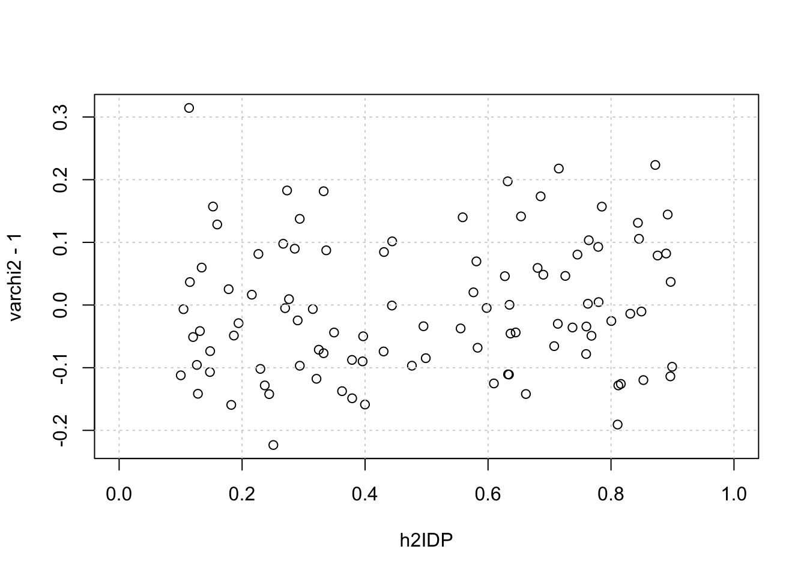

suppressMessages(library(tidyverse))
suppressMessages(library(glue))
PRE = "/Users/haekyungim/Library/CloudStorage/Box-Box/LargeFiles/imlab-data/data-Github/web-data"
SLUG="inflation-brainxcan" ## copy the slug from the header
bDATE='2023-04-07' ## copy the date from the blog's header here
DATA = glue("{PRE}/{bDATE}-{SLUG}")
if(!file.exists(DATA)) system(glue::glue("mkdir {DATA}"))
WORK=DATA
##system(glue("open {DATA}")) ## this will open the folder Inflation Brainxcan
analysis
Summary
When both \(Y\) and a mediator IDP are polygenic, the regression test \(Y\) on IDP is inflated with \(\text{Var}(Z_\text{bxcan}) = 1 + N h_1^2 \cdot \frac{\text{tr}(R'R)}{\text{tr}^2(R)}\). I’ll use simulations to understand this relationship as functions of \(h_Y\), \(h_\text{IDP}\), \(N\), \(M_Y\), and \(M_\text{IDP}\).
- \(h_Y\) is the heritability of \(Y\)
- \(h_\text{IDP}\)
- \(N\), is the sample size
- \(M_Y\) is the number of causal variants for Y
- \(M_\text{IDP}\) is the number of causal variants for the IDP
Load and Define Functions
suppressMessages(devtools::source_gist("115403f16bec0a0e871f3616d552ce9b") ) ## load fn_ratxcan, fast regression and other convenience functions to correlate subsets of columns of two matrices
suppressMessages(devtools::source_gist("38431b74c6c0bf90c12f") ) ## load qqunif
my_trace = function(mat) if(nrow(mat)==ncol(mat)) sum(diag(mat)) else error("matrix is not diagonal")
qqR2 <- function(corvec,nn,pad_neg_with_0 = FALSE,...)
{
## nn is the sample size, number of individuals used to compute correlation.
## needs correlation vector as input.
## nullcorvec generates a random sample from correlation distributions, under the null hypothesis of 0 correlation using Fisher's approximation.
if(pad_neg_with_0) corvec[corvec < 0 | is.na(corvec) ]=0
mm <- length(corvec)
nullcorvec = tanh(rnorm(mm)/sqrt(nn-3)) ## null correlation vector
qqplot(nullcorvec^2,corvec^2,...); abline(0,1); grid()
}
qqR <- function(corvec,nn,...)
{
## nn is the sample size, number of individuals used to compute correlation.
## needs correlation vector as input.
## nullcorvec generates a random sample from correlation distributions, under the null hypothesis of 0 correlation using Fisher's approximation.
mm <- length(corvec)
nullcorvec = tanh(rnorm(mm)/sqrt(nn-3)) ## null correlation vector
qqplot(nullcorvec,corvec,...); abline(0,1); grid()
}
## calculate p-value from correlation
cor2zscore = function(cc,nn)
{
zz = atanh(cc) * sqrt(nn-3)
}
cor2pval = function(cc,nn)
{
zz=cor2zscore(cc,nn)
pnorm(-abs(zz))*2
}
cor2chi2 = function(cc,nn)
{
cor2zscore(cc,nn)^2
}simulate_study = function(nsam,msnp,nsim,midp)
{
## simulate Xmat (nsam x msnp)
Xmat = matrix(rbinom(nsam*msnp, 2, 0.4), nsam, msnp)
## calculate GRM or LD matrix depending on min(nsam, msnp) and trrtr
R = scale(Xmat) ## QUESTION: DO I NEED TO SCALE ACROSS SAMPLES AND ACROSS SNPS?
if(nsam > msnp)
{
R = t(R)
MM = nsam
} else MM = msnp
R = ( R %*% t(R) ) / MM
trrtr = my_trace( t(R) %*% R ) / my_trace(R)^2
## simulate IDPmat (nsam x mipd)
gammamat = matrix(rnorm(msnp * midp),msnp, midp)
epsimat2 = matrix(rnorm(nsam * midp),nsam, midp)
epsimat2 = scale(epsimat2)
epsimat2 = sweep(epsimat2, MARGIN=2, sqrt(1 - h2IDP), FUN="*" )
gIDPmat = Xmat %*% gammamat
gIDPmat = scale(gIDPmat)
gIDPmat = sweep(gIDPmat, MARGIN=2, sqrt(h2IDP), FUN="*" )
IDPmat = gIDPmat + epsimat2
## simulate Ymat (nsam x nsim) indep of IDPs
betamat = matrix(rnorm(msnp*nsim),msnp, nsim)
epsimat = matrix(rnorm(nsam*nsim),nsam, nsim)
epsimat = scale(epsimat) * sqrt(1 - h2Y)
gYmat = Xmat %*% betamat
gYmat = scale(gYmat) * sqrt(h2Y)
Ymat = gYmat + epsimat
## calc cor
## scale Ymat & IDPmat
Ymat = scale(Ymat)
IDPmat = scale(IDPmat)
## multiply t(Ymat) %*% IDPmat
cormat = t(Ymat) %*% IDPmat
cormat = cormat / nsam
## calc varchi2
chi2mat = cor2chi2(cormat,nn=nsam)
varchi2 = apply(chi2mat,2,mean)
## build result list
res = list()
res$varchi2 = varchi2
res$trrtr = trrtr
res
}define parameters for simulation multiple comb of nsam and msnp
nsam = 10000
nsim = 150
midp = 100
msnp = 1000
h2Y = 0.5
h2IDP = 0.1 + runif(midp) * 0.8
nsamlist = c(100,1000,5000,10000); num_nsam=length(nsamlist)
msnplist = c(99,999,4999); num_msnp=length(msnplist)perform simulation
varchi2mat = array(NA, dim=c(num_nsam, num_msnp, midp) )
trrtrmat = matrix(NA,num_nsam, num_msnp)
for(ii in 1:num_nsam)
{
for(jj in 1:num_msnp)
{
res=list()
print(ii)
print(jj)
print(nsamlist[ii])
print(msnplist[jj])
res = simulate_study(nsam=nsamlist[ii],msnplist[jj],nsim,midp)
varchi2mat[ii,jj,] = res$varchi2
trrtrmat[ii,jj] = res$trrtr
}
}
##saveRDS(varchi2mat,glue("{DATA}/varchi2mat.RDS"))- TODO %%HERE read varchi2mat and analyze the dependence on h2, nsam, and msnp
varchi2mat = readRDS(glue("{DATA}/varchi2mat.RDS"))
varchi2 = varchi2mat[1,2,]
rangoy = range(c(0,varchi2-1))
plot(h2IDP,varchi2-1,ylim=rangoy, xlim=c(0,1)); grid()
print("intercept should be close to 1 and slope proportional to nsam")[1] "intercept should be close to 1 and slope proportional to nsam"summary(lm(varchi2 ~ h2IDP))
Call:
lm(formula = varchi2 ~ h2IDP)
Residuals:
Min 1Q Median 3Q Max
-0.20139 -0.08423 -0.01282 0.07831 0.33049
Coefficients:
Estimate Std. Error t value Pr(>|t|)
(Intercept) 0.95251 0.02318 41.100 <2e-16 ***
h2IDP 0.09522 0.04602 2.069 0.0412 *
---
Signif. codes: 0 '***' 0.001 '**' 0.01 '*' 0.05 '.' 0.1 ' ' 1
Residual standard error: 0.1056 on 98 degrees of freedom
Multiple R-squared: 0.04186, Adjusted R-squared: 0.03208
F-statistic: 4.281 on 1 and 98 DF, p-value: 0.04117